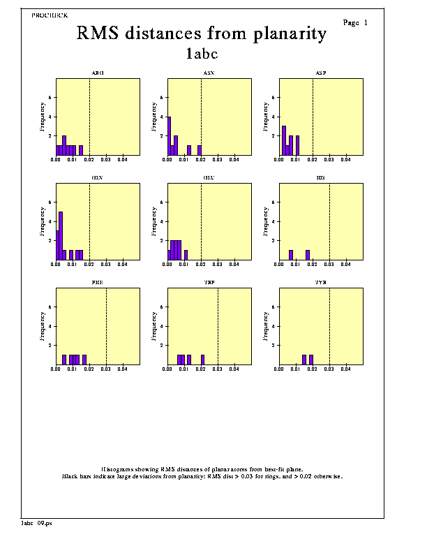

These histograms show the RMS distances from planarity for the different planar groups in the structure. The dashed lines indicate different ideal values for aromatic rings (Phe, Tyr, Trp, His) and for planar end-groups (Arg, Asn, Asp, Gln, Glu). The default values are 0.03Å and 0.02Å, respectively.
Histogram bars beyond the dashed lines are shown as highlighted.